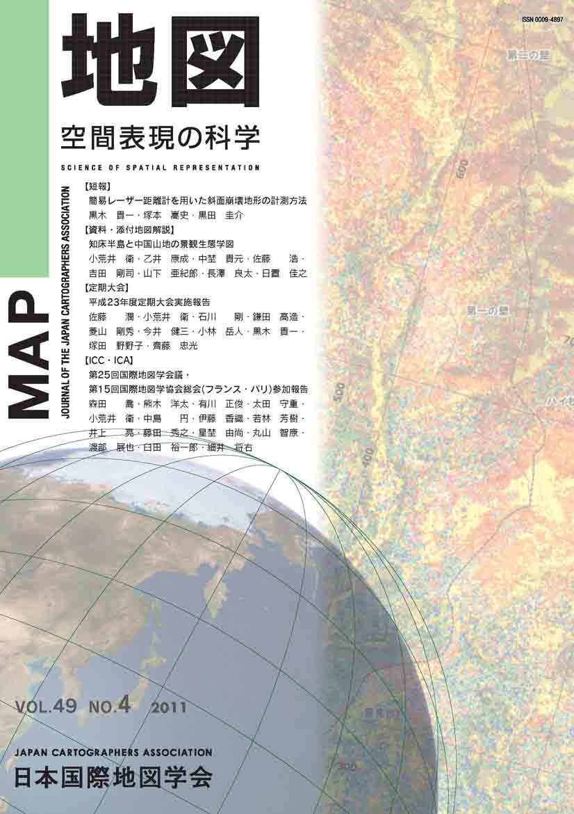
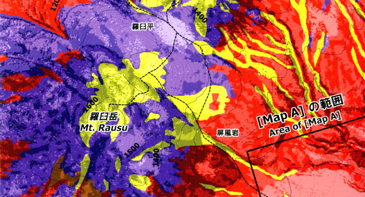

≪No.49 No.4 添付地図≫

本図を許可なく複製・利用することを禁止します。
| 最 新 号 | バックナンバー | 添付地図目録 | 投 稿 規 程 |
Vol.49 No.４ （通巻１９６号） ２０１１年
| 【短報】 | 簡易レーザー距離計を用いた斜面崩壊地形の計測方法 | 黒木貴一・塚本嵩史・黒田圭介 |
| キーワード：レーザー距離計、DEM、斜面崩壊、地形計測 | ||
| 【資料・添付地図解説】 | 知床半島と中国山地の景観生態学図 | 小荒井衛・乙井康成・中埜貴元・佐藤 浩・吉田剛司・山下亜紀郎・長澤良太・日置佳之 |
| キーワード：航空レーザ、景観生態学図、知床半島、中国山地 | ||
| 【定期大会】 | 平成23年度定期大会実施報告 | 佐藤 潤・小荒井衛・石川 剛・鎌田 高造・菱山剛秀・今井健三・小林岳人・黒木貴一・塚田野野子・齊藤忠光 |
| 【ICC・ICA】 | 第25回国際地図学会議・第15回国際地図学協会総会（フランス・パリ）参加報告 | 森田 喬・熊木洋太・有川正俊・太田守重・小荒井衛・中島 円・伊藤香織・若林芳樹・井上 亮・藤田秀之・星埜由尚・丸山智康・渡部展也・臼田裕一郎・細井将右 |
| キーワード：ICA、ICC、国際地図学会議、フランス，パリ | ||
| 【特別会員名簿】 | ||
| 【リレーメッセージ：地図・地図学への思い】 | 本学会設立時などの余談 | 金澤 敬 |
| 【年間総目次】 | ||
| 【学会記事】 | ||
| 【添付地図】 | 航空レーザ測量データを用いた景観生態学図 −羅臼岳周辺・知床岬− | |
| 航空レーザ測量データを用いた景観生態学図 −道後山北麓− | ||
|
≪No.49 No.4 表紙≫ |
|
|  |
|
|
|
≪No.49 No.4 添付地図≫ |
| 
本図を許可なく複製・利用することを禁止します。
|